Anomaly and Outlier Detection¶
Introduction¶
Section from [1].
Anomaly detection is the process of identifying unexpected items or events in datasets, which differ from the norm. In contrast to standard classification tasks, anomaly detection is often applied on unlabeled data, taking only the internal structure of the dataset into account. Anomalies are often associated with particular interesting events or suspicious data records. Anomalies are known to have two important characteristics:
Anomalies are different from the norm with respect to their features and
They are rare in a dataset compared to normal instances.
Anomaly detection algorithms are now used in many application domains and often enhance traditional rule-based detection systems, for example:
Intrusion detection
Fraud detection
Data Leakage Prevention
We can distinguish between three main types of anomaly detection: Supervised Anomaly Detection, Semi-supervised Anomaly Detection, and Unsupervised Anomaly Detection. Unsupervised Anomaly Detection is the most flexible setup which does not require any labels. Furthermore, there is also no distinction between a training and a test dataset. The idea is that an unsupervised anomaly detection algorithm scores the data solely based on intrinsic properties of the dataset. Typically, distances or densities are used to give an estimation what is normal and what is an outlier.
Fig. 1 Different anomaly detection modes depending on the availability of labels in the dataset. (a) Supervised anomaly detection uses a fully labeled dataset for training. (b) Semi-supervised anomaly detection uses an anomaly-free training dataset. Afterwards, deviations in the test data from that normal model are used to detect anomalies. (c) Unsupervised anomaly detection algorithms use only intrinsic information of the data in order to detect instances deviating from the majority of the data. Source: https://doi.org/10.1371/journal.pone.0152173.g001¶
The output of an unsupervised anomaly detection algorithm is often a score. Here, we also use scores and rank the results such that the ranking can be used for performance evaluation. Of course, a ranking can be converted into a label using an appropriate threshold.
Types of anomalies¶
Fig. 2 A simple two-dimensional example. It illustrates global anomalies (x1, x2), a local anomaly x3 and a micro-cluster c3. Source: https://doi.org/10.1371/journal.pone.0152173.g002¶
In Fig 2 two anomalies can be easily identified by eye: x1 and x2 are very different from the dense areas with respect to their attributes and are therefore called global anomalies. When looking at the dataset globally, x3 can be seen as a normal record since it is not too far away from the cluster c2. However, when we focus only on the cluster c2 and compare it with x3 while neglecting all the other instances, it can be seen as an anomaly. Therefore, x3 is called a local anomaly, since it is only anomalous when compared with its close-by neighborhood. It depends on the application, whether local anomalies are of interest or not. Another interesting question is whether the instances of the cluster c3 should be seen as three anomalies or as a (small) regular cluster. These phenomena is called micro cluster and anomaly detection algorithms should assign scores to its members larger than the normal instances, but smaller values than the obvious anomalies. This simple example already illustrates that anomalies are not always obvious and a score is much more useful than a binary label assignment.
To this end, an anomaly is always referred to a single instance in a dataset only occurring rarely. In reality, this is often not true. For example, in intrusion detection, anomalies are often referred to many (suspicious) access patterns, which may be observed at a larger amount as the normal accesses. In this case, an unsupervised anomaly detection algorithm directly applied on the raw data will fail. The task of detecting single anomalous instances in a larger dataset (as introduced so far) is called point anomaly detection. Nearly all available unsupervised anomaly detection algorithms today are from this type. If an anomalous situation is represented as a set of many instances, this is called a collective anomaly. Each of these instances is not necessarily a point anomaly, but only a specific combination thereof defines the anomaly. The previous given example of occurring multiple specific access patterns in intrusion detection is such a collective anomaly. A third kind are contextual anomalies, which describe the effect that a point can be seen as normal, but when a given context is taken into account, the point turns out to be an anomaly. The most commonly occurring context is time. As an example, suppose we measure temperature in a range of 0°to 35°C during the year. Thus, a temperature of 26°C seems pretty normal, but when we take the context time into account (e.g. the month), such a high temperature of 26°C during winter would definitively be considered as an anomaly.
Fig. 3 A taxonomy of unsupervised anomaly detection algorithms comprising of four main groups. Note that CMGOS can be categorized in two groups: It is a clustering-based algorithm as well as estimating a subspace of each cluster.¶
Statistical Method: Gaussian model (Mahalanobis distance)¶
One of the simplest approach to anomaly detection is to model the data as being generated from a multivariate normal distribution. The model assigns each observation a probability, which then can be used to asses if a particular observation is rare (unlikely) or not (high probability). Of course, if the assumption that the data comes from a normal distribution is not valid, this method does not perform well. In particular, multi-modal datasets, clustered data, etc. are not well suited to be modeled as a multivariate Gaussian.
We will follow an example taken from the course on Machine Learning by Andrew Ng on Coursera. We will implement an anomaly detection algorithm to detect anomalous behavior in the wine dataset. Among the 13 features we’ll select 2 to keep the data two dimensional and explore how the algorithm works. We suspect that the vast majority of these examples are “normal” (non-anomalous) examples of wine types, but there might also be some examples of anomalous wines within this dataset, (whatever that means).
We will use a Gaussian model to detect anomalous examples in your dataset. On the 2D dataset we will fit a Gaussian distribution and then find values that have very low probability and hence can be considered anomalies. After that, we will apply the anomaly detection algorithm to a larger dataset with many dimensions.
Let’s begin with some standard imports:
# Scientific and vector computation for python
import numpy as np
# Plotting library
import matplotlib.pyplot as plt
# tells matplotlib to embed plots within the notebook
%matplotlib inline
And import our data set:
# The following command loads the dataset.
from sklearn.datasets import load_wine
# Select the first class (59 elements), columns 'Malic acid' and 'Proline' (see DESCR)
X = load_wine()['data'][:59, [1,12]]
# Visualize the example dataset
plt.plot(X[:,0], X[:,1], 'bx', mew=2, mec='k', ms=6)
plt.axis([0, 5, 400, 1900])
plt.xlabel('Malic acid')
plt.ylabel('Proline');
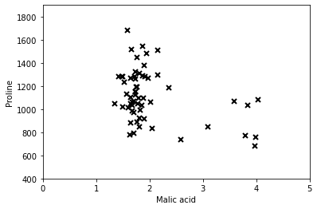
Multivariate Gaussian distribution¶
To perform anomaly detection, we will first need to fit a model to the data distribution. The Multivariate Gaussian distribution is given by
where \(\mu\) is the mean vector and \(\Sigma\) is the covariance matrix.
You can estimate the parameters by using the following Maximum Likelihood estimators. To estimate the mean, we will use:
and for the covariance you will use:
We’ll implement a function which estimates the parameters using the equations above. (estimateGaussian). The function takes as input the data matrix X and should output an n-dimension vector mu that holds the mean for each of the \(n\) features and the nxn covariance matrix Sigma that holds the variances of each of the features.
def estimateGaussian(X):
"""
This function estimates the parameters of a Gaussian distribution
using a provided dataset.
Parameters
----------
X : array_like
The dataset of shape (m x n) with each n-dimensional
data point in one row, and each total of m data points.
Returns
-------
mu : array_like
A vector of shape (n,) containing the means of each dimension.
Sigma : array_like
The (n x n) covariance matrix.
Instructions
------------
Compute the mean of the data and the variances
In particular, mu[i] should contain the mean of
the data for the i-th feature and Sigma[i,j]
should contain covariance between the i-th and
the j-th feature.
"""
# Useful variables
m, n = X.shape
# You should return these values correctly
mu = np.zeros(n)
Sigma = np.zeros((n, n))
mu = np.mean(X, axis=0)
Xc = X - mu # broadcasting takes care of substracting the mean from each row
Sigma = 1/n * Xc.T @ Xc
return mu, Sigma
In the next cell will visualizes the contours of the fitted Gaussian distribution, we can use this image to check your results.
From our plot, we can see that most of the examples are in the region with the highest probability, while the anomalous examples are in the regions with lower probabilities.
To do the visualization of the Gaussian fit, we first estimate the parameters of our assumed Gaussian distribution, then compute the probabilities for each of the points and then visualize both the overall distribution and where each of the points falls in terms of that distribution.
def multivariateGaussian(X, mu, Sigma):
"""
Computes the probability density function of the multivariate gaussian distribution.
Parameters
----------
X : array_like
The dataset of shape (m x n). Where there are m examples of n-dimensions.
mu : array_like
A vector of shape (n,) contains the means for each dimension (feature).
Sigma : array_like
Either a vector of shape (n,) containing the variances of independent features
(i.e. it is the diagonal of the correlation matrix), or the full
correlation matrix of shape (n x n) which can represent dependent features.
Returns
------
p : array_like
A vector of shape (m,) which contains the computed probabilities at each of the
provided examples.
"""
k = mu.size
# if sigma is given as a diagonal, compute the matrix
if Sigma.ndim == 1:
Sigma = np.diag(Sigma)
X = X - mu
p = (2 * np.pi) ** (- k / 2) * np.linalg.det(Sigma) ** (-0.5)\
* np.exp(-0.5 * np.sum(X @ np.linalg.pinv(Sigma) * X, axis=1))
return p
# Estimate my and sigma2
mu, Sigma = estimateGaussian(X)
# Returns the density of the multivariate normal at each data point (row)
# of X
p = multivariateGaussian(X, mu, Sigma)
# Visualize the fit
X1, X2 = np.meshgrid(np.linspace(0, 5, 100), np.linspace(400, 1900, 100))
Z = multivariateGaussian(np.stack([X1.ravel(), X2.ravel()], axis=1), mu, Sigma)
Z = Z.reshape(X1.shape)
plt.plot(X[:, 0], X[:, 1], 'bx', mec='b', mew=2, ms=8)
if np.all(abs(Z) != np.inf):
plt.contour(X1, X2, Z, levels=np.geomspace(1e-10, 1, 100), zorder=100)
plt.xlabel('Malic acid');
plt.ylabel('Proline');
plt.tight_layout();
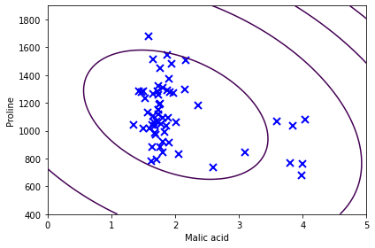
There is a problem with the previous estimation of our normal distribution. By inspecting the plot, it is clear that if outliers where removed the shape of the distribution should be an ellipse almost aligned with the y-axis. The problem is that the estimation of the covariance matrix is heavily influenced by the outliers. In principle, we would like to estimate the covariance using only the clean subset of the data.
One way to solve this problems is to use a robust estimator for the covariance matrix called the Minimum Covariance Determinant [2]. The Minimum Covariance Determinant estimator is a robust, high-breakdown point (i.e. it can be used to estimate the covariance matrix of highly contaminated datasets, up to \(\frac{n_\text{samples} - n_\text{features} - 1}{2}\) outliers) estimator of covariance. The idea is to find \(\frac{n_\text{samples}+n_\text{features}+1}{2}\) observations whose empirical covariance has the smallest determinant, yielding a “pure” subset of observations from which to compute standards estimates of location and covariance.
from sklearn.covariance import MinCovDet
def estimateGaussianRobust(X):
robust_cov = MinCovDet().fit(X)
mu = robust_cov.location_
Sigma = robust_cov.covariance_
return mu, Sigma
# Estimate my and sigma2
mu, Sigma = estimateGaussianRobust(X)
# Returns the density of the multivariate normal at each data point (row)
# of X
p = multivariateGaussian(X, mu, Sigma)
# Visualize the fit
X1, X2 = np.meshgrid(np.linspace(0, 5, 100), np.linspace(400, 1900, 100))
Z = multivariateGaussian(np.stack([X1.ravel(), X2.ravel()], axis=1), mu, Sigma)
Z = Z.reshape(X1.shape)
plt.plot(X[:, 0], X[:, 1], 'bx', mec='b', mew=2, ms=8)
if np.all(abs(Z) != np.inf):
plt.contour(X1, X2, Z, levels=np.geomspace(1e-10, 1, 10), zorder=100)
plt.xlabel('Malic acid');
plt.ylabel('Proline');
plt.tight_layout();
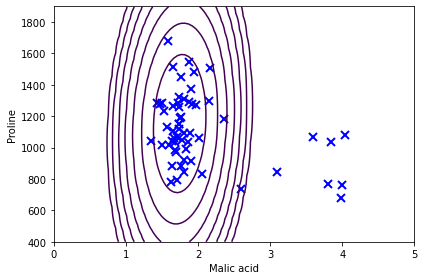
Choosing the threshold¶
Now, the outliers are identified as the points having the lowest probability according to the fitted model. This probabilities can serve as the scores of our method. Because of the “squashing” effect of the exponential, its much clearer to use the Mahalanobis distance, which is just the exponent of the multivariate Gaussian.
def MD(X):
mu, Sigma = estimateGaussianRobust(X)
X = X - mu
MD = np.sqrt(np.sum(X @ np.linalg.pinv(Sigma) * X, axis=1))
return MD
# Calculate the MD for each point, the plot the scores to identify possible outliers.
scores = MD(X)
threshold = 5
plt.axhline(threshold, color='red')
plt.plot(scores, 'o')
plt.xlabel('Index')
plt.ylabel('Mahalanobis distance')
n_outliers = (scores > threshold).sum()
top_outliers = np.argsort(scores)[::-1][:n_outliers]
print('Top outliers: ', top_outliers)
Top outliers: [43 39 45 21 41 46 19 4]
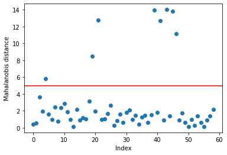
Distance based OD¶
In a modern distance based approach, an outlier is an observation far away from its neighbors. A distance based methods do not assume any distribution (non-parametric), but employ the whole set of observations.
The approach was first formalized by Knorr and Ng [3]. The distance based (DB) method labels an observation \(x\) as an outlier if the fraction of points farther than a distance \(\delta\) from \(x\) exceeds a specified threshold \(\alpha\), i.e, if the following condition is satisfied
where \(n\) is the number of observations, and \(\alpha,\delta \in \mathbb{R}(0 \leq \alpha \leq1)\) are parameters.
Fig. 4 A DB outlier (left) and a regular observation (right). Source: Mahito Sugiyama course on Data Mining (https://mahito.nii.ac.jp/lecture)¶
The main drawbacks of the \(DB(\alpha, \delta)\) methods are that choosing the right value for \(\delta\) is hard and that it outputs a binary classification of observations. A point is either an outlier or it is not. It would be nice to have a measure of the degree of outlierness of a point. The follwing algorithms based on the distance to the k-nearest neighbors offer just that.
KNN¶
We will consider two different nearest neighbor based algorithms, depending on whether the the distance to the kth-nearest-neighbor is used (a single one) or the average distance to all of the k-nearest-neighbors is computed. In the following, we refer to the first method as kth-NN [4] and the latter as k-NN. Both algorithms assign a score to each observation based on the distance to its neighbors (the kth distance or the average).
In practical applications, the k-NN method is often preferred. However, the absolute value of the score depends very much on the dataset itself, the number of dimensions, and on normalization. As a result, it is not easy to select an appropriate threshold.
Fig. 5 kthNN scores based on the distance to the second neighbor. Note that if the first neighbor were to be used, observations 10 and 11 would rank much lower, thus failed to be identified as outliers. Source: Mahito Sugiyama course on Data Mining (https://mahito.nii.ac.jp/lecture)¶
Our KNN algorithm will use a brute force approach to calculate the nearest neighbors. This implies the calculation of \(N^2\) pairwise distances among all observations (rows) of the data matrix. More efficient approaches for large datasets employ KDTrees or BallTrees (see, for example, https://scikit-learn.org/stable/modules/neighbors.html). Euclidian distance is often used, but other metrics can be employed as well. The distance matrix is an \(N\times N\) matrix defined as:
You will implement the distance matrix calculation in the assignment. There exists an efficient way to calculate this matrix using Numpy broadcasting. To do this, we need to transform our original data matrix \(X\) into new 3D arrays that repeat X along a given dimension. The purpose is to obtain 3D array with all elements of the form \(x_{ik} - x_{jk}\) indexed as \(ijk\). If you are unfamiliar with broadcasting operations, you may wish to implement this as a nested for loop, at the cost of being slower.
There are two variants of this algorithm, the kth-NN and the KNN algorithm. The kth-NN algorithm finds the distance to the kth neighbor, while the KNN algorithm uses the average distance from the first k neighbors. This distances are called scores. For both algorithm we need to find the scores, then sort according to those scores. The larger the score, the more likely a point is to be an outlier. You’ll be ask to implement this functionality in the scores_knn function in the assignment.
The choice of the parameter \(k\) is of course important for the results. If it is chosen too low, the density estimation for the records might be not reliable. On the other hand, if it is too large, density estimation may be too coarse. As a rule of thumb, k should be in the range 10 < k < 50.
Testing KNN in the wine dataset should output the following result, where the circle radius is proportional to the scores of each point:
# Normalize the data matrix, this step is important
# since the scale of the two columns differs significantly
from sklearn import preprocessing
X_scaled = preprocessing.MinMaxScaler().fit_transform(X)
# Submitt with k=10, you may test other options
k = 10
kthnn_scores = scores_knn(X_scaled, k, kth=True)
knn_scores = scores_knn(X_scaled, k, kth=False)
plt.rcParams.update({'font.size': 22})
fig = plt.figure(figsize=(10,8))
plt.scatter(X[:,0], X[:,1], s=1000*kthnn_scores, edgecolors='r',
facecolors='none', label='Outlier scores kthnn')
plt.scatter(X[:,0], X[:,1], s=1000*knn_scores, edgecolors='b',
facecolors='none', label='Outlier scores knn')
plt.scatter(X[:,0], X[:,1], s=5, color='k', label='Data points')
legend = plt.legend()
legend.legendHandles[0]._sizes = [20]
legend.legendHandles[1]._sizes = [20]
plt.xlabel('Malic acid')
plt.ylabel('Proline');
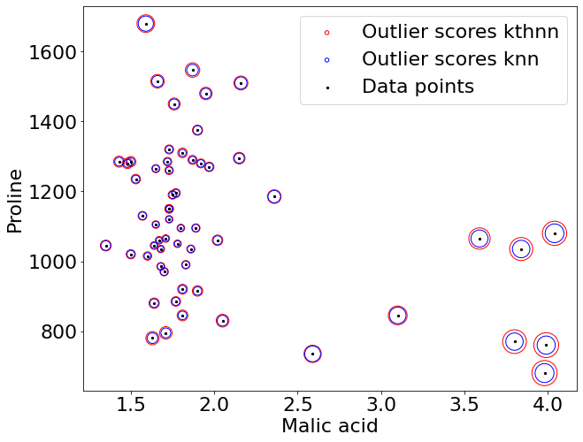
For large date sets, naive KNN algorithms become inefficient, as they scale as \(O(n^2)\). Two modifications have been proposed to deal with scalability issues, mainly by avoiding unnecessary distance computations. One modification, ORCA [5], uses an Approximate Nearest Neighbor Search, which terminates as soon as the current score becomes smaller than the t-th largest score so far, as then x can never become an outlier. The second one, iORCA [6], further improves on ORCA by indexing observations using the distance from a reference point.
Other drawback is that distance based algorithms cannot cope with in-homogeneously spaced data, i.e, data where density varies greatly, or with clusters of different local densities. In this cases, density based or angle based algorithms perform better.
Fig. 6 Two clusters of different density for which KNN based methods perform poorly. Source: Mahito Sugiyama course on Data Mining (https://mahito.nii.ac.jp/lecture)¶
Density based OD: Local Outlier Factor (LOF)¶
The local outlier factor [7,8] is the most well-known local anomaly detection algorithm and also introduced the idea of local anomalies first. To calculate the LOF score, three steps have to be computed:
The k-nearest-neighbors have to be found for each record \(x\). In case of distance tie of the kth neighbor, more than \(k\) neighbors are used.
Using these k-nearest-neighbors \(N_k(x)\) (the set of neighbors), the local density for a record is estimated by computing the local reachability density (LRD):
\[ LRD_k(x) = 1/\left( \frac{\sum\limits_{o\in N_k(x)} d_k(x,o)}{\left|N_k(x)\right|} \right) \]whereas \(d_k(x,o)\) is the reachability distance. Except for some very rare situations in highly dense clusters, this is the Euclidean distance.
Finally, the LOF score is computed by comparing the LRD of a record with the LRDs of its k neighbors:
\[ LOF(x) = \frac{\sum\limits_{o\in N_k(x)}\frac{LRD_k(o)}{LRD_k(x)}}{\left|N_k(x)\right|} \]
The LOF score is thus basically a ratio of local densities. This results in the nice property of LOF, that normal instances, which densities are as big as the densities of their neighbors, get a score of about 1.0. Anomalies, which have a low local density, will result in larger scores. At this point it is also clear why this algorithm is local: It only relies on its direct neighborhood and the score is a ratio mainly based on the k neighbors only. Of course, global anomalies can also be detected since they also have a low LRD when comparing with their neighbors. It is important to note that in anomaly detection tasks, where local anomalies are not of interest, this algorithm will generate a lot of false alarms.
The reachability distance is defined as:
In words, the reachability distance of an object \(x\) from \(o\) is the true distance of the two objects, but at least the k-distance of \(o\). Objects that belong to the k nearest neighbors of \(o\) (the “core” of \(o\)) are considered to be equally distant, i.e., equally reachable from \(o\). The reason for this distance is to get more stable results. Note that this is not a distance in the mathematical definition, since it is not symmetric.
You’ll be asked to implement the LOF algorithm in the assignment. The function lof(X, k) takes the data matrix and \(k\), the number of neighbors, as inputs; and outputs the scores for each observation.
# Normalize the data matrix, this step is important
# since the scale of the two columns differs significantly
from sklearn import preprocessing
X_scaled = preprocessing.MinMaxScaler().fit_transform(X)
k = 10
lof_scores = lof(X_scaled, k)
plt.scatter(X[:,0], X[:,1], s=20, c=lof_scores)
plt.colorbar()
plt.axis([0, 5, 400, 1900])
plt.xlabel('Malic acid')
plt.ylabel('Proline');
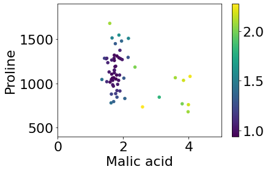
Larger scores are associated with possible outliers. Use the above image to check your work. The main drawback of LOF is it scales as \(O(n^2)\). Another one is that the resulting values are quotient-values and hard to interpret (text from [8]). A value of 1 or even less indicates a clear inlier, but there is no clear rule for when a point is an outlier. In one data set, a value of 1.1 may already be an outlier, in another dataset and parameterization (with strong local fluctuations) a value of 2 could still be an inlier. These differences can also occur within a dataset due to the locality of the method. There exist extensions of LOF that try to improve over LOF in these aspects:
Feature Bagging for Outlier Detection [9] runs LOF on multiple projections and combines the results for improved detection qualities in high dimensions. This is the first ensemble learning approach to outlier detection, for other variants see [10].
Local Outlier Probability (LoOP) [11] is a method derived from LOF but using inexpensive local statistics to become less sensitive to the choice of the parameter k. In addition, the resulting values are scaled to a value range of [0:1].
Interpreting and Unifying Outlier Scores [12] proposes a normalization of the LOF outlier scores to the interval [0:1] using statistical scaling to increase usability and can be seen an improved version of the LoOP ideas.
On Evaluation of Outlier Rankings and Outlier Scores [13] proposes methods for measuring similarity and diversity of methods for building advanced outlier detection ensembles using LOF variants and other algorithms and improving on the Feature Bagging approach discussed above.
Local outlier detection reconsidered: a generalized view on locality with applications to spatial, video, and network outlier detection [14] discusses the general pattern in various local outlier detection methods (including, e.g., LOF, a simplified version of LOF and LoOP) and abstracts from this into a general framework. This framework is then applied, e.g., to detecting outliers in geographic data, video streams and authorship networks.
Angle based outlier detection (ABOD)¶
The main idea behind ABOD [15] is that if \(x\) is an outlier, the variance of angles between pairs of the remaining objects becomes small:
Fig. 7 Left: Range of angle values for an inlier (blue) and an outlier (red). Right: Angle values for all pairs of data points for the same observations. Notice the inlier’s (blue) large variation. Source: https://doi.org/10.1371/journal.pone.0152173.g001¶
For a point within a cluster, the angles between difference vectors to pairs of other points differ widely. The variance of the angles will become smaller for points at the border of a cluster. However, even here the variance is still relatively high compared to the variance of angles for real outliers. Here, the angles to most pairs of points will be small since most points are clustered in some directions.
As a result of these considerations, an angle-based outlier factor (ABOF) can describe the divergence in directions of objects relatively to one another. If the spectrum of observed angles for a point is broad, the point will be surrounded by other points in all possible directions meaning the point is positioned inside a cluster. If the spectrum of observed angles for a point is rather small, other points will be positioned only in certain directions. This means, the point is positioned outside of some sets of points that are grouped together. Thus, rather small angles for a point that are rather similar to one another imply that such point is an outlier.
ABOD has been proposed as able to perform outlier detection more reliably in high dimensional data sets than distance based methods.
A problem of the basic approach ABOD is obvious: since for each point all pairs of points must be considered, the time-complexity is in O(\(n^3\)), the original ABOD paper proposes two approximations to address this problem: FastABOD and LB-ABOD. These will not be discussed here. Another fast approximation, FastVOA [16], estimates the first and the second moment of the variance independently using random projections and AMS sketches, at the expense of introducing many parameters.
As an approach to assign the ABOF value to any object in the database \(\mathcal{D}\), we compute the scalar product of the difference vectors of any triple of points (i.e. a query point \(\vec{A} \in \mathcal{D}\) and all pairs \((\vec{B},\vec{C})\) of all remaining points in \(\mathcal{D} \backslash \{\vec{A}\})\) normalized by the quadratic product of the length of the difference vectors, i.e. the angle is weighted less if the corresponding points are far from the query point. By this weighting factor, the distance influences the value after all, but only to a minor part. Nevertheless, this weighting of the variance is important since the angle to a pair of points varies naturally stronger for a bigger distance. The variance of this value over all pairs for the query point \(\vec{A}\) constitutes the angle-based outlier factor (ABOF) of \(\vec{A}\).
NOTE: This way of weighting the cosine similar is weird in my opinion. In fact, the pyod package implements ABOD without these weights. I’m not sure which way is the correct one, or even is one can say that either can be wrong, since the constructions of the algorithm is not based in any formalism. I have yet yo find a discussion about the issue.
You’ll be asked to implement the scoring function abof(a, X) in the assignment. The inputs are the index \(a\) of an observation and the data matrix \(X\). The output is the score for observation \(x_a\).
def abod(X):
""" Retrun abof scores for X """
scores = []
for a in range(len(X)):
scores.append(abof(a, X))
return np.array(scores)
# Normalize the data matrix, this step is important
# since the scale of the two columns differs significantly
from sklearn import preprocessing
X_scaled = preprocessing.MinMaxScaler().fit_transform(X)
k = 10
abod_scores = abod(X_scaled)
plt.scatter(X[:,0], X[:,1], c=np.log(abod_scores))
plt.colorbar()
plt.axis([0, 5, 400, 1900])
plt.xlabel('Malic acid')
plt.ylabel('Proline');
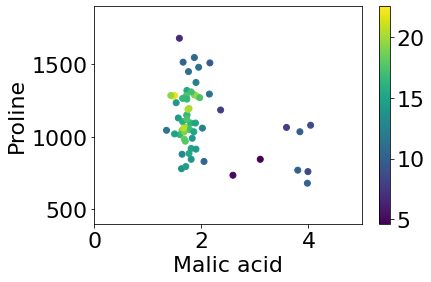
In this case, lower scores are associated with outliers. Use the image above to check your implementation.
iForest¶
One efficient way of performing outlier detection in high-dimensional datasets is to use random forests. The Isolation Forest algorithm [17,18] ‘isolates’ observations by randomly selecting a feature and then randomly selecting a split value between the maximum and minimum values of the selected feature.
Since recursive partitioning can be represented by a tree structure, the number of splittings required to isolate a sample is equivalent to the path length from the root node to the terminating node.
This path length, averaged over a forest of such random trees, is a measure of normality and our decision function.
Random partitioning produces noticeably shorter paths for anomalies. Hence, when a forest of random trees collectively produce shorter path lengths for particular samples, they are highly likely to be anomalies.
An example of random partitioning in a 2D dataset of normally distributed points is given below for a non-anomalous point:
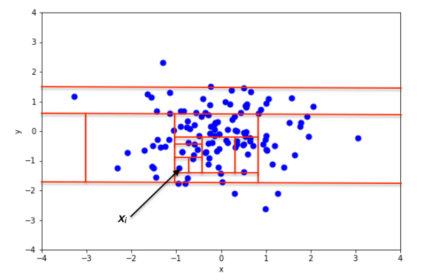
Another example for a point that’s more likely to be an anomaly is now shown:
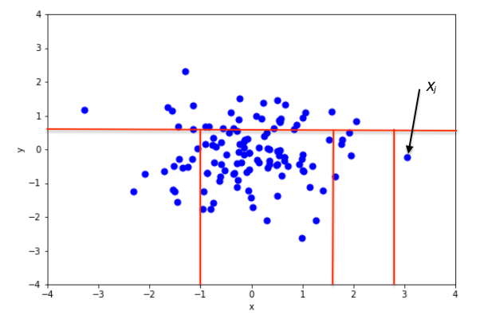
It is apparent from the pictures how anomalies require fewer random partitions to be isolated, compared to normal points.
From a mathematical point of view, recursive partitioning can be represented by a tree structure named Isolation Tree, while the number of partitions required to isolate a point can be interpreted as the length of the path, within the tree, to reach a terminating node starting from the root.
The iTree¶
More formally, let \(X = \{ x_1, \ldots, x_n \}\) be a set of d-dimensional points and \(X' \subset X\) a subset of \(X\). An Isolation Tree (iTree) is defined as a data structure with the following properties:
for each node \(T\) in the Tree, \(T\) is either an external-node with no child, or an internal-node with one “test” and exactly two daughter nodes (\(T_l\), \(T_r\))
a test at node \(T\) consists of an attribute \(q\) and a split value \(p\) such that the test \(q < p\) determines the traversal of a data point to either \(T_l\) or \(T_r\).
In order to build an iTree, the algorithm recursively divides \(X'\) by randomly selecting an attribute \(q\) and a split value \(p\), until either (i) the node has only one instance or (ii) all data at the node have the same values.
When the iTree is fully grown, each point in \(X\) is isolated at one of the external nodes. Intuitively, the anomalous points are those (easier to isolate, hence) with the smaller path length in the tree, where the path length \(h(x_i)\) of point \(x_{i}\in X\) is defined as the number of edges \(x_i\) traverses from the root node to get to an external node.
Since iForest does not need to isolate all of normal instances – the majority of the training sample, iForest is able to work well with a partial model without isolating all normal points and builds models using a small sample size. Swamping refers to wrongly identifying normal instances as anomalies. When normal instances are too close to anomalies, the number of partitions required to separate anomalies increases – which makes it harder to distinguish anomalies from normal instances. Masking is the existence of too many anomalies concealing their own presence. When an anomaly cluster is large and dense, it also increases the number of partitions to isolate each anomaly. Under these circumstances, evaluations using these trees have longer path lengths making anomalies more difficult to detect. Note that both swamping and masking are a result of too many data for the purpose of anomaly detection. The unique characteristic of isolation trees allows iForest to build a partial model by sub-sampling which incidentally alleviates the effects of swamping and masking. It is because: 1) sub-sampling con- trols data size, which helps iForest better isolate examples of anomalies and 2) each isolation tree can be specialised, as each sub-sample includes different set of anomalies or even no anomaly.
Note: I vaguely remember the code here is based on someone else’s code, but I don’t seem to locate the source. It has been refactored, but I am unsure at what extent. So I cannot confidently claim it as original.
import random as rn
class Node():
def __init__(self, X, feature, s_value, depth, left, right, node_type=' '):
self.depth = depth # The path depth of the node in the tree.
self.size = len(X) # Initial number of observations in the node
self.feature = feature # Feature along which to split the observations
self.s_value = s_value # Value the separates the split
self.left = left # Left node
self.right = right # Right node
self.ntype = node_type # Type: either internal or external.
class iTree():
def __init__(self, X, max_height):
""" Initializes the root node and parameters. """
self.max_h = max_height # Max depth of the tree
self.nFeatures = X.shape[1] # Number of features in the data matrix
# Initialize the tree with the root
self.root = self.make_tree(X, 0)
def make_tree(self, X, current_height):
""" Recursivele builds the iTree. """
if current_height >= self.max_h or len(X) <= 1:
# Return an external node
return Node(X, None, None, current_height, None, None, 'exNode')
# Choose a random feature
feature = rn.randint(0, self.nFeatures - 1)
fmin = np.min(X[:, feature])
fmax = np.max(X[:, feature])
if fmin == fmax:
# Many instances of the same value, return exNode
return Node(X, None, None, current_height, None, None, 'exNode')
# Choose a random split value
s_value = rn.uniform(fmin, fmax)
# Find mask for X
s_mask = X[:, feature] < s_value
# Return node only after recursively calculating its children
return Node(X, feature, s_value, current_height,
self.make_tree(X[s_mask], current_height + 1),
self.make_tree(X[~s_mask], current_height + 1),
'inNode')
def get_node(self, path):
node = self.root
for p in path:
if p == 'L' : node = node.left
if p == 'R' : node = node.right
return node
Lets build a single iTree and visualize the partition obtained in our sample data set:
test_tree = iTree(X, 3)
def get_splits(node):
splits = [(node.s_value, node.feature)]
if node.left != None:
splits += get_splits(node.left)
if node.right != None:
splits += get_splits(node.right)
return splits
splits = get_splits(test_tree.root)
plt.plot(X[:,0], X[:,1], 'bx', mew=2, mec='k', ms=6)
for x in [x for (x, m) in splits if m==0]:
plt.axvline(x)
for y in [y for (y, m) in splits if m==1]:
plt.axhline(y)
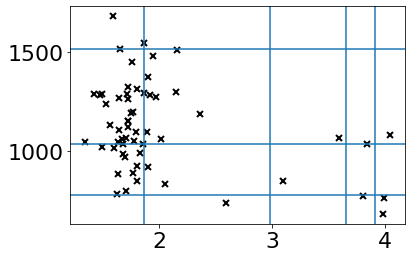
Now let’s try to isolate a single observation:
test_tree = iTree(X, np.inf)
def isolate_x(x, iTree):
splits = []
node = iTree.root
while node.ntype != 'exNode':
splits.append((node.s_value, node.feature))
if x[node.feature] < node.s_value:
node = node.left
else:
node = node.right
return splits
x = X[45]
splits = isolate_x(x, test_tree)
plt.plot(X[:,0], X[:,1], 'bx', mew=2, mec='k', ms=6)
for l in [x for (x, m) in splits if m==0]:
plt.axvline(l)
for l in [y for (y, m) in splits if m==1]:
plt.axhline(l)
plt.plot(x[0], x[1], 'ro');
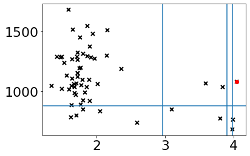
Anomaly score¶
Since iTrees have an equivalent structure to Binary Search Tree or BST, the estimation of average \(h(x)\) for external node terminations is the same as the unsuccessful search in BST, this is:
where \(H(i)\) is the harmonic number and it can be estimated by \(\ln(i) + 0.5772156649\) . As \(c(n)\) is the average of \(h(x)\) given \(n\), we use it to normalize \(h(x)\). The anomaly score \(s\) of an instance \(x\) is defined as:
where \(E(h(x))\) is the average of \(h(x)\) from a collection of isolation trees. Using the anomaly score s, we are able to make the following assessment:
(a) if instances return s very close to 1, then they are definitely anomalies,
(b) if instances have s much smaller than 0.5, then they are quite safe to be regarded as normal instances, and
(c) if all the instances return \(s \approx 0.5\), then the entire sample does not really have any distinct anomaly.
def c_factor(n):
return 2.0*(np.log(n-1) + 0.5772156649) - 2.0*(n-1)/n
Training stage¶
In the training stage, iTrees are constructed by recursively partitioning the given training set until instances are isolated or a specific tree height is reached of which results a partial model. Note that the tree height limit l is automatically set by the sub-sampling size \(\psi\): \(l = ceiling(\log_2 \psi)\), which is approximately the average tree height. The rationale of growing trees up to the average tree height is that we are only interested in data points that have shorter-than- average path lengths, as those points are more likely to be anomalies.
def iForest(X, n_trees=100, sample_size=256, max_depth=None):
""" Trains an iForest as an ensemble of iTrees.
Inputs:
X: input data
n_trees: Ensemble size, number of iTrees to build. Default of 100 taken from original paper.
sampling_size: Size of the random samples taken from X. Dafault of 256 taken from original paper.
Output: a list of iTrees."""
m, n = X.shape
if len(X) < sample_size:
sample_size = len(X)
if max_depth is None:
max_depth = int(np.ceil(np.log2(sample_size)))
cn = c_factor(sample_size)
forest = []
for i in range(n_trees):
sample = rn.sample(range(m), sample_size)
forest.append(iTree(X[sample], max_depth))
return cn, forest
forest = iForest(X)
Evaluation stage¶
In the evaluating stage, an anomaly score \(s\) is derived from the expected path length \(E(h(x))\) for each test instance. \(E(h(x))\) are derived by passing instances through each iTree in an iForest. Using PathLength function, a single path length \(h(x)\) is derived by counting the number of edges e from the root node to a terminating node as instance \(x\) traverses through an iTree. When \(x\) is terminated at an external node, where \(Size > 1\), the return value is \(e\) plus an adjustment \(c(Size)\). The adjustment accounts for an unbuilt subtree beyond the tree height limit. When \(h(x)\) is obtained for each tree of the ensemble, an anomaly score is produced by computing \(s(x, \psi)\).
def path_length(x, node):
if node.ntype == 'exNode':
if node.size <= 1:
return node.depth
else:
return node.depth + c_factor(node.size)
value = x[node.feature]
if value < node.s_value:
return path_length(x, node.left)
else:
return path_length(x, node.right)
def score_forest(X, forest):
scores = []
for x in X:
h = 0
for t in forest[1]:
h += path_length(x, t.root)
h /= len(forest[1])
score = 2 ** (-h/forest[0])
scores.append(score)
return np.array(scores)
iforest_scores = score_forest(X, forest)
plt.scatter(X[:,0], X[:,1], c=iforest_scores)
plt.colorbar()
plt.axis([0, 5, 400, 1900])
plt.xlabel('Malic acid')
plt.ylabel('Proline');
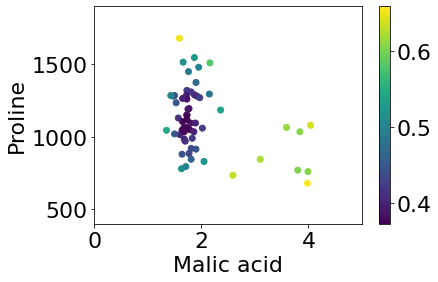
References¶
- 1
Markus Goldstein and Seiichi Uchida. A comparative evaluation of unsupervised anomaly detection algorithms for multivariate data. PloS one, 11(4):e0152173, 2016.
- 2
Mia Hubert, Michiel Debruyne, and Peter J Rousseeuw. Minimum covariance determinant and extensions. Wiley Interdisciplinary Reviews: Computational Statistics, 10(3):e1421, 2018.
- 3
Edwin M Knorr and Raymond T Ng. Algorithms for mining distance-based outliers in large datasets. In VLDB, volume 98, 392–403. Citeseer, 1998.
- 4
Sridhar Ramaswamy, Rajeev Rastogi, and Kyuseok Shim. Efficient algorithms for mining outliers from large data sets. In Proceedings of the 2000 ACM SIGMOD international conference on Management of data, 427–438. 2000.
- 5
Stephen D Bay and Mark Schwabacher. Mining distance-based outliers in near linear time with randomization and a simple pruning rule. In Proceedings of the ninth ACM SIGKDD international conference on Knowledge discovery and data mining, 29–38. 2003.
- 6
Kanishka Bhaduri, Bryan L Matthews, and Chris R Giannella. Algorithms for speeding up distance-based outlier detection. In Proceedings of the 17th ACM SIGKDD international conference on Knowledge Discovery and Data Mining, 859–867. 2011.
- 7
Markus M Breunig, Hans-Peter Kriegel, Raymond T Ng, and Jörg Sander. Lof: identifying density-based local outliers. In Proceedings of the 2000 ACM SIGMOD international conference on Management of data, 93–104. 2000.
- 8(1,2)
Wikipedia contributors. Local outlier factor — Wikipedia, the free encyclopedia. 2020. [Online; accessed 24-March-2021]. URL: https://en.wikipedia.org/w/index.php?title=Local_outlier_factor&oldid=992466888.
- 9
Aleksandar Lazarevic and Vipin Kumar. Feature bagging for outlier detection. In Proceedings of the eleventh ACM SIGKDD international conference on Knowledge discovery in data mining, 157–166. 2005.
- 10
Arthur Zimek, Ricardo JGB Campello, and Jörg Sander. Ensembles for unsupervised outlier detection: challenges and research questions a position paper. Acm Sigkdd Explorations Newsletter, 15(1):11–22, 2014.
- 11
Hans-Peter Kriegel, Peer Kröger, Erich Schubert, and Arthur Zimek. Loop: local outlier probabilities. In Proceedings of the 18th ACM conference on Information and knowledge management, 1649–1652. 2009.
- 12
Hans-Peter Kriegel, Peer Kroger, Erich Schubert, and Arthur Zimek. Interpreting and unifying outlier scores. In Proceedings of the 2011 SIAM International Conference on Data Mining, 13–24. SIAM, 2011.
- 13
Erich Schubert, Remigius Wojdanowski, Arthur Zimek, and Hans-Peter Kriegel. On evaluation of outlier rankings and outlier scores. In Proceedings of the 2012 SIAM International Conference on Data Mining, 1047–1058. SIAM, 2012.
- 14
Erich Schubert, Arthur Zimek, and Hans-Peter Kriegel. Local outlier detection reconsidered: a generalized view on locality with applications to spatial, video, and network outlier detection. Data mining and knowledge discovery, 28(1):190–237, 2014.
- 15
Hans-Peter Kriegel, Matthias Schubert, and Arthur Zimek. Angle-based outlier detection in high-dimensional data. In Proceedings of the 14th ACM SIGKDD international conference on Knowledge discovery and data mining, 444–452. 2008.
- 16
Ninh Pham and Rasmus Pagh. A near-linear time approximation algorithm for angle-based outlier detection in high-dimensional data. In Proceedings of the 18th ACM SIGKDD international conference on Knowledge discovery and data mining, 877–885. 2012.
- 17
Fei Tony Liu, Kai Ming Ting, and Zhi-Hua Zhou. Isolation forest. In 2008 eighth ieee international conference on data mining, 413–422. IEEE, 2008.
- 18
Wikipedia contributors. Isolation forest — Wikipedia, the free encyclopedia. 2021. [Online; accessed 24-March-2021]. URL: https://en.wikipedia.org/w/index.php?title=Isolation_forest&oldid=1005785930.
Further reading:
One-class SVM trains on normal already seen data, and classifies new data as outliers/inliers. Schölkopf, B. et al., “Estimating the support of a high-dimensional distribution”, Neural computation (2001)
Sampling methods employ a small sample of points to calculate distances from other points. The idea is that small samples contain mainly inliers. Sugiyama, M., Borgwardt, K.M., “Rapid Distance-Based Outlier Detection via Sampling”, NIPS 2013
Ensemble methods are recently emerging. Aggarwal, C.C., Outlier Ensembles: An Introduction, Springer (2017)
Python modules for outlier detection: